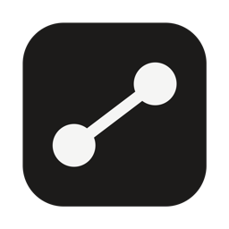

Congratulations, everything works!
This page comes from the host's Mac, through DevShare. Whoever the host invites opens it the same way, wherever they are.
Ask the demo service
Put your sites here
~/Sites
Each project in these folders shows up in DevShare, ready to share. On a guest's iPhone or iPad, devshare-native opens the demo app from its tile, and devshare-service answers pong to ping in DevShare's terminal, as it does to this page's button.
Where these projects come from
The host's Mac shares the projects in ~/Sites, or in any other folder they choose to watch in DevShare for Mac. Sharing starts on a Mac; on this device you open what is shared.
The other demo projects: devshare-native opens the demo app from its tile, and devshare-service answers pong to PING in its terminal, as it does to this page's button.